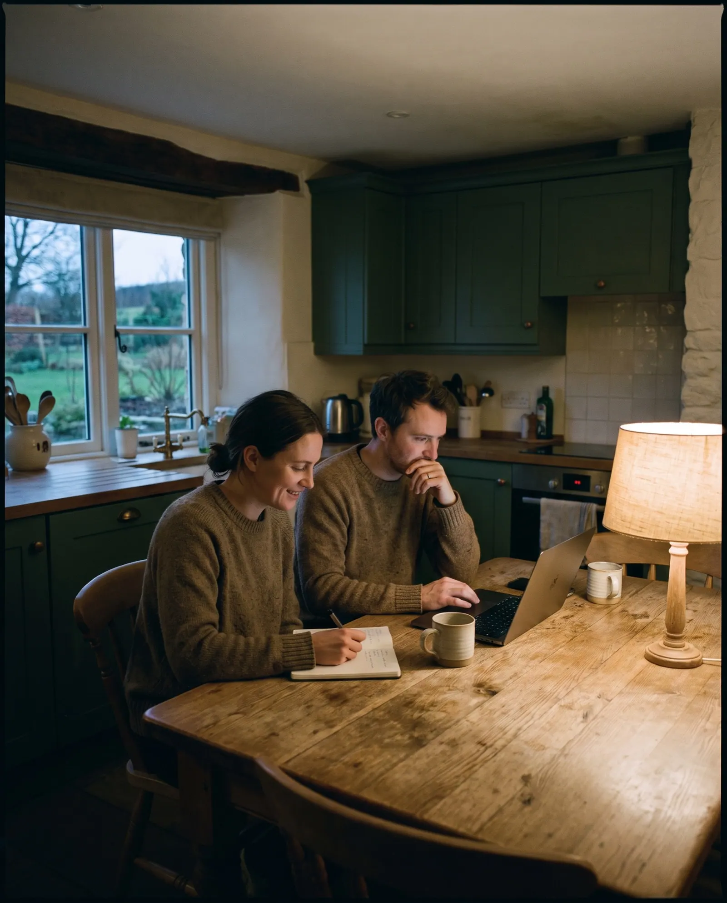
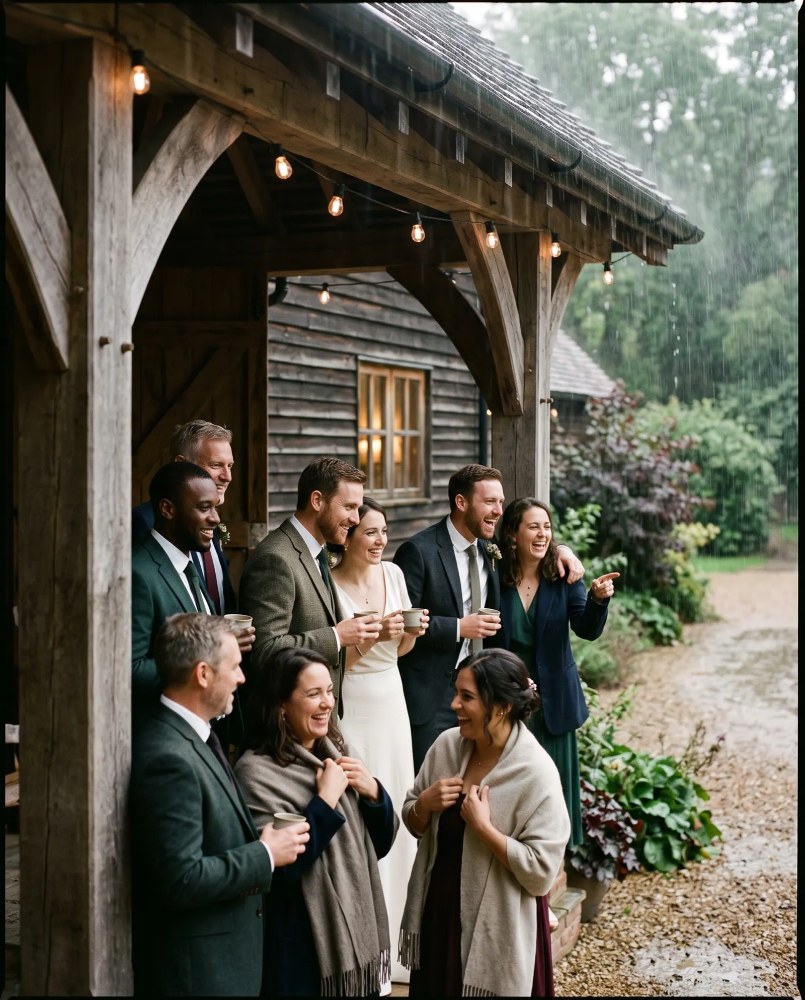
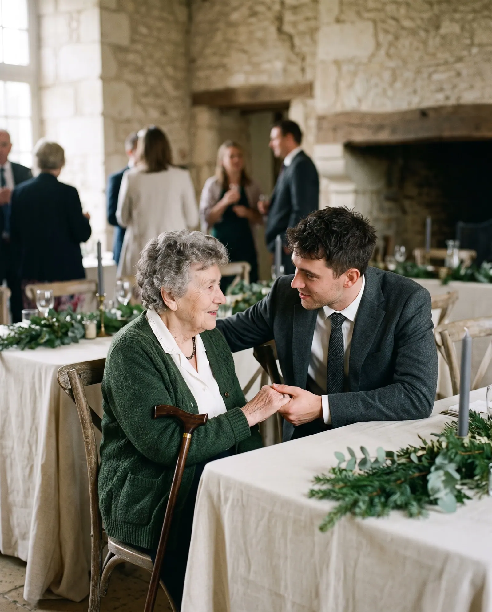

The venue tour begins at the kitchen table
We read the websites of 191 independent wedding venues in the US the way a couple does: on a phone, asking what it costs, how many it holds, whether their date is free and what happens if it rains.
0 venues
Four kinds of venue
Thirteen checks
The State of Independent Wedding Venue Websites · Q4 2026 · edition 2026-Q4
The headline
of the websites in this study answer the couple's question.
Couples ask nine things. The median venue answers four.
Across 191 independent wedding venue websites, the median site answers five of the nine questions couples ask before they request a tour. 49% show a starting price or a price range; 9% show which dates are open.1
What a couple can find out before they write
We turned nine questions couples ask before they request a tour into nine checks, then read each site for an answer a couple could find on a phone. The details card lists them, most answered first.
Share of all websites answering each question · marked “regrets” = fewer than a third · tick = half
Figure 1. Share of sites that answer each question on the home page or a page it links to, read from the served HTML. Bars are drawn to scale.

Four kinds of venue, side by side
Barns and farms (62): median score 77, a price shown on 53%, a rain plan on 48%. Estates and historic houses (45): median score 76, a price shown on 51%, a rain plan on 38%. Vineyards and wineries (45): median score 77, a price shown on 40%, a rain plan on 36%. Lofts and restaurants with event space (39): median score 78, a price shown on 49%, a rain plan on 13%.
The seating chart · median website score out of 100
Where each website scores
Overall website score out of 100, one dot per site; the evergreen rule is each group's median
Figure 2. Overall website score out of 100, one dot per site. ± on each table is the margin of error on a yes/no share for that group at 95% confidence. The score is Clikiti's overall website score (rubric v2): usability 30%, speed 25%, accessibility 25%, SEO 10%, trust 10%. It measures the website, not the venue. The couple's questions are reported separately and do not feed it.2

The question every outdoor ceremony raises
0%of venue sites say what happens if it rains.
A venue that shows its covered porch or indoor backup, with photographs from a real wet day, answers the question before the couple has to ask it on the tour.
Four venues, up close
Four real sites from this edition, one strong, two in the middle and one weak. Each photograph shows the kind of moment its findings describe; the venue itself stays anonymous. The number is the overall website score; each dot is one check, filled when the site passes it.
Norwood Vineyard
Vineyards and winerie, Jonesboro, GA. It answers 8 of the 9 couple questions this edition tests, loads fast on phones and describes its images; like most sites in this study, it has yet to pass text contrast (WCAG 1.4.3). Its overall website score is 79/100. Named as a positive example; every other site in this report is anonymous.
What it does well
- A starting price or price range for the venue or a package
- Guest capacity stated as a number
- What the venue fee includes, item by item
- Catering and vendor policy: in-house, preferred list or outside
- A rain or weather plan stated
- A tour can be booked or requested online
- A wedding photo gallery
- Reviews marked up, in a widget or quoted
- Real phone visitors see the main content in 1.2 s (Chrome UX Report, 75th percentile; good is 2.5 s or less)
- Every image has a text description (WCAG 1.1.1)
- Clikiti pillar scores of 90 or more: accessibility 97, SEO 100, trust 92
Where it could still improve
- Not found on the home page or the pages it links to: open dates listed or an availability calendar

The guests left out
A wedding has guests of every age, on every kind of phone. A grandparent using zoomed text or a screen reader, or a guest on a weak signal at the venue's own gate, is still reading the venue's page. These checks measure whether the site lets them in.3
Table 1. Technical checks, share of the 191 sites that fail each one.
How the sites were read
Read
The home page and up to twelve pages it links to (weddings, events, pricing and packages, the spaces, gallery, FAQ, vendors and catering, tours, availability, reviews, about, contact), read as a server delivers them. The couple’s questions are answered here, by fixed published rules (Appendix A4).
Measure
Google Lighthouse (PageSpeed Insights) in a phone and a desktop render, with Chrome UX Report field data where it exists: load time, contrast and image descriptions. Repeatable.
Review
An expert usability review of each home page against Nielsen's heuristics, used only in the usability part of the score. Every issue must name the heuristic, a severity and the element, or it is dropped.
Read the full methodology Sample, definitions, scoring, precision and limitations, in Appendix A.

For agencies and freelancers
What this means for agencies
what to fix first, and how to pitch it
For small agencies and freelancers who build websites for independent wedding and event venues. We scanned 191 of their websites: 1% score under 60 out of 100, and 77% leave at least three of the questions couples ask unanswered. Here is where the winnable work is, which problems to lead a pitch with, and how to show them without days of spec design.
Who is realistic to win
Estates and historic houses are the most winnable: the lowest median score in this report (76 out of 100), and 2% of them score under 60. Their problems are visible, specific and fixable by a small team.
| Type | Sites | Median | Under 60 |
|---|---|---|---|
| Barns and farms | 62 | 77 | 0% |
| Estates and historic houses | 45 | 76 | 2% |
| Vineyards and wineries | 45 | 77 | 0% |
| Lofts and restaurants with event space | 39 | 78 | 0% |
Score out of 100. "Under 60" is the share of sites that miss most of what a couple looks for.
5 problems to lead a pitch with
- 91%Is our date still free? Build
An availability page linked from the home page: open dates listed by month, or a calendar the venue updates when a date books.
"Is our date free?" is the first question in every inquiry. Answer it on the site and the inquiries you get are for dates you have.
- 76%Text contrast passes 4.5:1 Quick fix
Raise text contrast to at least 4.5:1, especially light script and thin text over photographs.
Pale text on a pale photo is hard to read for the parents and grandparents who look too, and it is a WCAG failure.
- 72%Loads in under 2.5 s on a phone Build
Resize and compress the hero photographs and slideshow, lazy-load the gallery and defer scripts; aim for under 2.5 s on a phone.
Your home page takes several seconds to appear on a phone, which is where couples look first.
- 64%What if it rains? Quick fix
Name the rain plan: where the ceremony moves, when the call is made and whether a tent or covered space is included in the fee.
Every couple booking an outdoor ceremony asks about rain. A named plan on the page answers it before the tour.
- 59%Do other couples vouch for you? Quick fix
Quote couples on the home and weddings pages, or embed the venue’s reviews, with Review or AggregateRating markup.
Couples praise you on The Knot and Google, and your own site keeps it quiet.
Share of sites with the problem. WCAG items are accessibility failures. Every check cites a standard in the method section.
How to show a prospect their problems, and a redesign
- 1Lead with their problem, not your services
Open with one question the site fails, for example "Is our date still free?" (91% of sites in this report miss it), and show the exact page where the answer should be.
- 2Put a number on it
Compare their site with the sector: across 191 independent barn, estate, vineyard and loft wedding venues sites, the median scores 77 out of 100 and answers 5 of the 9 questions couples ask. A number travels further inside the client than an opinion.
- 3Show the fix without days of spec work
A rough redesign that answers those questions persuades better than a proposal, but it usually costs a designer a day or two per prospect. You can sketch it by hand, or use Clikiti: the scan is free and shows any site's problems in about a minute, and paid plans draft a redesign of the home page from the prospect's own brand, from about $2.33 per pitch.
Scan a prospect's site free No sign-up. You see what the prospect would see.
Show every venue what its couples see
Clikiti reads a venue's site the way a couple does, states what it found, and generates the redesign you present before the first call.
See your market on ClikitiMethodology
How this study was designed, who was included, what was measured and how far the results can be relied on. It is written so that an agency can share it with a venue owner who wants to check the evidence behind a pitch.
A1. The research question
When a couple planning a wedding looks an independent venue up online, usually on a phone, can they find out what it costs, how many guests it holds, whether their date is free, what the fee includes, whether they can bring their own caterer, what happens if it rains, whether they can book a tour online, what real weddings there looked like and whether other couples vouch for it?
Population. Independently owned US wedding and event venues with one to three properties and their own website, in four groups: barns and farms, estates and historic houses, vineyards and wineries, and city lofts and restaurants with an event space. These are the venues a small or mid-size web agency can realistically win as clients.
A2. Who was studied
The sample was built from local search listings, city by city, then screened so that every site in it is one an independent agency could realistically win.
| Source | What it contributes | Sites |
|---|---|---|
| Local search, barns and farms | Barn, farm and ranch wedding venues found in local search results, city by city | 62 |
| Local search, estates and historic houses | Privately run estates, manors, mansions and historic houses that host weddings, found in local search results, city by city | 52 |
| Local search, vineyards and wineries | Independent wineries and vineyards with a weddings page, found in local search results, city by city | 46 |
| Local search, lofts and restaurants | Independent city lofts, industrial event spaces and restaurants or breweries with a private event space for weddings, found in local search results, city by city | 35 |
Included
- An independently owned venue with one to three properties and its own website (not a directory, marketplace or social profile)
- Hosts weddings and says so on its site
- Based in the United States
- Home page responds and shows the venue it claims to be (each home page title was checked before scanning)
Excluded
- Hotel chains and resort groups, and hotel ballrooms
- Venue groups and hospitality groups running four or more venues (for example Wedgewood Weddings), and wineries owned by large wine corporations
- Marketplace and listing pages (The Knot, WeddingWire, Zola, Here Comes the Guide, Peerspace, Yelp) and social profiles
- Members-only country clubs with no public wedding page
- Municipal, county and state-park venues, and house museums run by a government body
- Directories, lead-generation sites, franchises and national brands
- Parked, placeholder, password-protected, hijacked or unreachable sites, and duplicates
| From list to sample | Sites |
|---|---|
| Candidates listed | 213 |
| Removed at screening: the site refused automated visitors (15) | −15 |
| Removed at screening: no response (1) | −1 |
| Removed at editorial review: a site showing only a maintenance page (1) and a township-owned historic house (1) | −2 |
| Cohort | 195 |
| Region (US Census) | Barns and farms | Estates and historic houses | Vineyards and wineries | Lofts and restaurants with event space | All |
|---|---|---|---|---|---|
| Northeast | 11 | 11 | 11 | 11 | 44 |
| Midwest | 10 | 12 | 13 | 9 | 44 |
| South | 25 | 11 | 10 | 11 | 57 |
| West | 16 | 11 | 11 | 8 | 46 |
| All regions | 62 | 45 | 45 | 39 | 191 |
A3. How the sites were read
Pages. The home page, then for each of twelve topics (weddings, events, pricing and packages, the spaces, gallery, FAQ, vendors and catering, tours, availability, reviews, about, contact) the best-matching link on the home page, and up to two pricing, FAQ or tour links on the weddings page.
Speed and accessibility. Google PageSpeed Insights (Lighthouse) on a mid-range phone profile and on desktop, plus Chrome UX Report data from real visitors over the previous 28 days where Google publishes it for the site.
Crawler conduct. One request at a time to each site, at least 400 ms apart, at most thirteen pages per site; robots.txt is read and obeyed for every page requested; a site that refuses is left out and never retried. The crawler identifies itself as Mozilla/5.0 (compatible; ClikitiResearch/1.0; +https://clikiti.com).
A4. What was measured
9 questions couples ask before they request a tour, answered from what each site publishes, and 4 technical checks against published standards. A check passes only when the rule below is met; anything the crawler cannot confirm counts as not answered.
| Question | Counts as answered when | Standard |
|---|---|---|
| What will it cost us?A starting price or price range for the venue or a package | A dollar amount is tied to the venue or a wedding package: a venue or site fee, a rental, a package, a price per guest, a day of the week or a season, a 'starting at' price or a food and beverage minimum. Wine, tasting, menu and shop prices, deposits, gift cards, discounts and 'up to' amounts do not count. Add-on fees (cleaning, extra hours, an extra ceremony site) and bar packages do not count either. | Clikiti couple question 1 of 9 |
| How many guests can you hold?Guest capacity stated as a number | A number of guests (20 or more) is stated (for example 'up to 200 guests', 'seats 150', 'capacity of 250'). Tour groups, tasting sessions, parking and overnight rooms do not count. | Clikiti couple question 2 of 9 |
| Is our date still free?Open dates listed or an availability calendar | The couple can see which dates are open: an availability page linked from the home page with a calendar on it or two or more months with day numbers listed, a Google or Teamup calendar embed, or open dates listed with a month and a day. A 'check availability' link to an inquiry form, a date picker in a form or an events calendar does not count. | Clikiti couple question 3 of 9 |
| What's included in the fee?What the venue fee includes, item by item | What the venue fee includes is listed: an 'included' or 'includes' statement naming two or more items (tables, chairs, linens, setup, a coordinator, a bridal suite, parking, sound, lighting, catering, bar service, tableware). | Clikiti couple question 4 of 9 |
| Can we bring our own caterer?Catering and vendor policy: in-house, preferred list or outside | The catering or vendor policy is stated either way: in-house or exclusive catering, a preferred or approved vendor list, outside caterers or vendors allowed or not, bring your own alcohol or not. | Clikiti couple question 5 of 9 |
| What if it rains?A rain or weather plan stated | A rain or weather plan is stated: a rain plan or rain location, an indoor or covered backup or alternative, a plan B, 'rain or shine', or inclement weather explained. An indoor ceremony option alone does not count. | Clikiti couple question 6 of 9 |
| Can we book a tour online?A tour can be booked or requested online | A tour or visit can be booked or requested online: a scheduling service on a page read, a form on the page a 'book a tour' link opens, or a form with a tour or visit field. A phone number or email address alone does not count. | Clikiti couple question 7 of 9 |
| Can we see real weddings here?A wedding photo gallery | A wedding photo gallery: a linked gallery, photos, portfolio or real weddings page, or gallery markup with six or more images on the home or weddings page. | Clikiti couple question 8 of 9 |
| Do other couples vouch for you?Reviews marked up, in a widget or quoted | Reviews are marked up for search engines (Review or AggregateRating structured data), shown through a review widget (including WeddingWire and The Knot widgets), at least two testimonials in a couple's own words are quoted on the home, about, weddings or reviews page, or a reviews page carries two or more passages in a couple's own words. A link or badge alone does not count. | Clikiti couple question 9 of 9 |
| Technical checks | ||
| Loads in under 2.5 s on a phoneLoads in under 2.5 s on a phone | Real visitors on phones see the main content within 2.5 seconds (Chrome UX Report, 75th percentile). Where Google publishes no visitor data, the phone lab test is used. | Core Web Vitals · LCP |
| Text contrast passes 4.5:1Text contrast passes 4.5:1 | No text on the home page fails the WCAG 1.4.3 minimum contrast of 4.5:1, in either the phone or desktop test. | WCAG 1.4.3 |
| Images have text descriptionsImages have text descriptions | Every meaningful image on the home page has a text description (WCAG 1.1.1). | WCAG 1.1.1 |
| Event venue or local business structured dataEvent venue or local business structured data | The site describes the venue to search engines with EventVenue, LocalBusiness, Winery, Restaurant, LodgingBusiness or a similar structured data type. | Schema.org · EventVenue |
A5. The website score
Each site's overall score (0 to 100) is Clikiti's website score, rubric 2.0.0. It measures the website, not the venue, and the couple questions above do not feed it. It is a weighted mean of five pillars:
| Pillar | Weight | Based on |
|---|---|---|
| Usability | 30% | Checks of the home page for broken links and images, and an expert review of the page as rendered on a phone and on a desktop screen, against Jakob Nielsen's ten usability heuristics. Each issue must name the heuristic, a severity on the Nielsen Norman Group scale and the exact element or wording; issues without all three are discarded, and two independent passes must agree. |
| Speed | 25% | Google Lighthouse on a mid-range phone (60%) and on desktop (20%), and real-visitor Core Web Vitals from the Chrome UX Report (20%) where available. |
| Accessibility | 25% | Google Lighthouse accessibility audits (70%) and Clikiti's own WCAG checks of the served page (30%). |
| Search | 10% | Google Lighthouse SEO audits (60%) and Clikiti's own search checks of the served page (40%). |
| Trust | 10% | Google Lighthouse best-practice audits (40%) and security header checks (60%). |
Within a pillar, each issue costs points by severity (critical, high, medium, low) and by how many times it occurs; issues based on judgement count at 70% of measured ones, and duplicates of the same root cause count once. On the four venue profiles, the number out of 100 is this overall score, and each dot is one check in its group: filled when the site passes it, hollow when it does not.
A6. Precision
With 191 sites, a share reported for the whole sample is precise to within ±7.1 percentage points at 95% confidence (worst case, a 50% share; 1.96 × √(0.25/n)). By type: barns and farms ±12.4 (n = 62); estates and historic houses ±14.6 (n = 45); vineyards and wineries ±14.6 (n = 45); lofts and restaurants with event space ±15.7 (n = 39). Differences between types smaller than these margins should be read as similar. Percentages are rounded to whole numbers; medians are the middle value of the sites in a group.
A7. Quality control
- Every home page in the cohort was fetched and its title checked against the listed venue before scanning
- Every home page was checked for hijacked content (gambling, pharmacy, adult and crypto spam) before scanning
- Every home page was checked for a second website of the same venue (shared phone numbers and names)
- Detection rules were checked against the evidence they record for a sample of venues in every group, and revised before the final run
- Every published figure is recomputed from the data at build time, and a statement in the text that the data does not support stops the build
- Results are published only after automated checks for missing data, anonymity, accessibility of the report itself and the margin of error statement pass
A8. Limitations
- A point-in-time snapshot: sites change, and a venue's prices and open dates change through the year.
- Only public pages were read: the home page and pages it links to. Downloadable brochures and PDF price sheets, inquiry flows behind a form and client portals were not read, so a venue that sends its prices only on request fails the price question.
- Answers are read from the page as a server delivers it. Content that only appears after scripts run in the browser (some calendars, schedulers and review widgets) is not seen, which the study counts as a gap a search engine or a slow phone would also meet.
- Candidates that blocked automated visitors are not in the study; sites behind such protection may differ from those studied.
- The study reports what a website shows. It does not judge any venue's property, catering, service or prices.
- Automated accessibility tests find only part of what WCAG covers; keyboard and screen-reader use need a manual audit.
- The sample is a structured list of real, independent venues, not a random draw. Margins of error are given as a guide to precision, not as a guarantee that the results hold for every venue in the country.
A9. Data, licence and corrections
The aggregate results are published as CSV and JSON beside this report under the Creative Commons Attribution 4.0 licence: you may reuse, adapt and share them, including in client proposals, with a credit to Clikiti and a link. No per-site results are published. Corrections and removal requests are reviewed and answered personally; see the end of this report.
Venues in this study
The 191 websites in this edition, by type. This list says who was scanned and nothing more: results in this report are shown only in aggregate or anonymously.
Barns and farms (62)
- Almquist FarmHastings, MN
- Barn at Sandcastle FarmDallas, NC
- Bear Creek Farm Event BarnLaingsburg, MI
- Beautiful Beginnings FarmNewborn, GA
- Bella Luna FarmsSnohomish, WA
- Blessing BarnHumboldt, TN
- Butler BarnBeaverton, OR
- Carriage Hills RanchBlanco, TX
- Caswell Farm & Wedding BarnGray, ME
- Cedar Hills FarmSoddy Daisy, TN
- Cold Creek FarmDawsonville, GA
- Cold Spring FarmAlton, NH
- Country BarnLancaster, PA
- Creekside Farm and StablesHarrisburg, OR
- Double Creek FarmCulleoka, TN
- Edlynn FarmGraham, WA
- Grace BarnDel Rey, CA
- Heritage Wedding BarnsShelby, MI
- Isham Family FarmWilliston, VT
- Leeds FarmOstrander, OH
- Legacy at Serenity FarmsAuburn, AL
- Little Creek BarnForest, OH
- Longmire Wedding and Event BarnYelm, WA
- Mountain View MenagerieJohnstown, CO
- Myers Wedding BarnSperry, IA
- Oak Creek FarmUnionville, VA
- Ol' Hitchin Post RanchBuckley, WA
- Once Upon a Time EventsKiowa, CO
- Red Rocks BarnColorado Springs, CO
- Renback BarnRochelle, VA
- River Fort RanchGreeley, CO
- River Highlands RanchGrass Valley, CA
- Ryan Family FarmLaGrangeville, NY
- Still Meadow FarmPurcellville, VA
- Storm King Mountain RanchMontrose, CO
- Sylvanside FarmPurcellville, VA
- The Barn at Big OakFranklin, GA
- The Barn at Black Walnut FarmSaugerties, NY
- The Barn at Boyden FarmCambridge, VT
- The Barn at Cranberry CreekBoonville, NC
- The Barn at DeerfieldHogansville, GA
- The Barn at Granite Ridge FarmsMocksville, NC
- The Barn at King Hill FarmKnightdale, NC
- The Barn at Magnolia FarmMount Eden, KY
- The Barn at SilverstoneLancaster, PA
- The Barn at Sycamore FarmsArrington, TN
- The Barn of Chapel Hill at Wild Flora FarmChapel Hill, NC
- The Bird RanchGustine, CA
- The Farm at Carter HillMarlborough, CT
- The Farm at DoverDover, WI
- The Farm at Wolf CreekBarnesville, GA
- The Farmer's Daughter at Walston PondMacclesfield, NC
- The Keller Brick BarnDallas Center, IA
- The Lily BarnTownsend, TN
- Tobacco Barn FarmHolt, MO
- Trinity Tree FarmIssaquah, WA
- Wagon Springs RanchBurnet, TX
- Wagon Wheel FarmBurlington, WI
- Whiteface HollowTamworth, NH
- Willow Sky RanchFredericksburg, TX
- Wood Acres FarmTerryville, CT
- Woodland Meadow FarmsSnohomish, WA
Estates and historic houses (45)
- Artisan Acres EstateNoblesville, IN
- Bella Rose EstateChandler, AZ
- Briscoe ManorRichmond, TX
- Cape Horn EstateStevenson, WA
- Chateau NouvelleHouston, TX
- Crook PointGold Beach, OR
- Drumore EstatePequea, PA
- Garth Woodside MansionHannibal, MO
- Greencrest ManorBattle Creek, MI
- Hadden EstateWatkinsville, GA
- Haseltine EstateSpringfield, MO
- Historic Peach Blossom FarmSpringfield, TN
- Homestead ManorThompson's Station, TN
- Julia Morgan Redwood GroveHumboldt County, CA
- LionsgateLyons, CO
- Longview MansionLee's Summit, MO
- Lord Thompson ManorThompson, CT
- Los WillowsFallbrook, CA
- Lynwood EstateRichmond, KY
- Magnolia ManorPerryville, KY
- Maison AlbionAlbion, NY
- Maravilla GardensCamarillo, CA
- Milliken ManorJaffrey, NH
- Mountain House EstateCloverdale, CA
- Ocala EstateOcilla, GA
- Sandlewood ManorTomball, TX
- Secluded Garden EstatePala, CA
- Semple MansionMinneapolis, MN
- Springwater Lakes EstateOregon City, OR
- Stonegate ManorBenton Harbor, MI
- The 1774 InnPhippsburg, ME
- The Abbott MansionCleveland, GA
- The EstateNew Haven, CT
- The Evermore ManorWest Creek, NJ
- The Gardens Wedding CenterAllenton, WI
- The Griffin HouseHood River, OR
- The James Ward MansionWestfield, NJ
- The Manor at Mount CarmelCovington, TN
- The Manor HousePierrepont Manor, NY
- The Monte Bello EstateLemont, IL
- The Van Dusen MansionMinneapolis, MN
- The Von Isley EstateNiles, OH
- The William Mason HouseThompson, CT
- Willowdale EstateTopsfield, MA
- Woodland EstateYoungstown, OH
Vineyards and wineries (45)
- Alcantara VineyardCottonwood, AZ
- Autumn Creek VineyardsMayodan, NC
- Beacon Hill Winery and VineyardGaston, OR
- Bella Terra VineyardsHunker, PA
- Blue Cielo FarmsCommerce, GA
- Blue Valley VineyardDelaplane, VA
- Brignole VineyardsEast Granby, CT
- CaliPaso Winery and VillaPaso Robles, CA
- Cassell VineyardsMansfield, MO
- Chateau LillRedmond, WA
- Duplin WineryRose Hill, NC
- Early Mountain VineyardsMadison, VA
- Eberle WineryPaso Robles, CA
- Finley Creek VineyardsZionsville, IN
- Flag Hill Winery & DistilleryLee, NH
- Forever Farms WineryMedina, OH
- Harper's VineyardTownsend, TN
- LaChance VineyardsDe Soto, MO
- Milea Estate VineyardStaatsburg, NY
- Monterre VineyardsOrefield, PA
- New Kent WineryNew Kent, VA
- Norwood VineyardJonesboro, GA
- Novelty Hill-JanuikWoodinville, WA
- Over The VinesEdgerton, WI
- Red Maple VineyardWest Park, NY
- Rock N Wool WineryPoynette, WI
- Snow Farm VineyardSouth Hero, VT
- Summerset WineryIndianola, IA
- Sutcliffe VineyardsCortez, CO
- The Castle VineyardCleveland, WI
- The Hillside VineyardFort Collins, CO
- The Venue in the VinesEllijay, GA
- The Vineyard at St. CharlesSt. Charles, IA
- The Vineyards at Pine LakeColumbiana, OH
- Tomasello WineryHammonton, NJ
- Tosca VineyardNew Waverly, TX
- Ventosa VineyardsGeneva, NY
- Villa Antonio WineryHillsboro, MO
- Villa San-JuliettePaso Robles, CA
- Westers Family VineyardsRives Junction, MI
- Whaleback VineyardPoultney, VT
- Whistler's KnollHortonville, WI
- Wilson Creek WineryTemecula, CA
- Youngberg HillMcMinnville, OR
- Zorvino VineyardsSandown, NH
Lofts and restaurants with event space (39)
- A Room With A ViewNashville, TN
- Ambient + StudioAtlanta, GA
- Antique LoftHoboken, NJ
- Block 41Seattle, WA
- CapuletNew Orleans, LA
- Dye HouseProvidence, RI
- Everett WestPortland, OR
- Factory AtlantaChamblee, GA
- Forest Hall at Chatham MillsPittsboro, NC
- Foundry EventsNashville, TN
- Front & PalmerPhiladelphia, PA
- GarageHouston, TX
- Garage BBoston, MA
- Generations HallNew Orleans, LA
- Hamilton LoftBrooklyn, NY
- High Line Car HouseColumbus, OH
- Lacuna LoftsChicago, IL
- Loft LuciaChicago, IL
- Loft on PassyunkPhiladelphia, PA
- Maine Studio WorksPortland, ME
- Moss DenverDenver, CO
- O'Maine StudiosPortland, ME
- OlioPeabody, MA
- Park West LoftRidgewood, NJ
- Ravenswood Event CenterChicago, IL
- Rockley's Event CenterDenver, CO
- Site 17 Event CenterTucson, AZ
- South SecondMilwaukee, WI
- Stillwell HouseTucson, AZ
- StrongwaterColumbus, OH
- The CenturyColumbus, OH
- The ChicoryNew Orleans, LA
- The DelawareIndependence, MO
- The Dumbo LoftBrooklyn, NY
- The Grove at City MarketRaleigh, NC
- The Treasury 1929Tucson, AZ
- The WhimMinneapolis, MN
- Whitaker and AtlanticRaleigh, NC
- WithinSodoSeattle, WA
About this study
This report is based on automated scans of publicly available home pages, and pages they link to, run on 2026-10-15 to 2026-10-16. Its findings are a point-in-time technical snapshot of each website. They are not a judgement of any venue's property, food, service or prices, and automated checks may contain errors. This report is not a judgement of any venue’s property, catering, service or prices, and it does not check whether a stated price, capacity or date is current. Clikiti is not affiliated with, and does not endorse, any venue listed here; trademarks belong to their owners. The report is provided “as is” under CC BY 4.0, without warranty of any kind. Every person in this report's photographs is AI-generated; none is a real person. The one venue screenshot is the featured venue's own home page, shown unaltered.
Remove my venue from this study
We review every request and reply when it's done; removed venues are excluded from future editions.